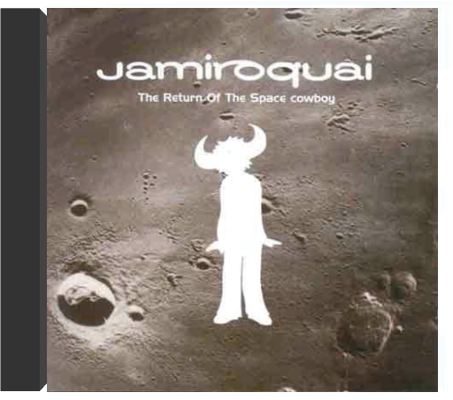

2017 album from Hawaiian singer-songwriter/surfer, recorded in his home studio featuring 'My Mind Is For Sale' & 'Sunsets For Somebody Else'.  the return of the space cowboyjamiroquai JAMIROQUAI - The return of the space cowboy Nombre de titres 11 titres Paru 1994 Artistes JAMIROQUAI Titre de l'album The return of the space cowboy Titres des chansons 1. Just another story2. Stillness in time3. Half the man4. Light years5. Manifest destiny6. The kids7. Mr Moon8. Scam9. Journey to Arnhemland10. Morning glory11. Space cowboy |  2010 release, the seventh album from British Jazz Funk pioneers Jamiroquai. Fronted by the charismatic Jay Kay, this is the band's first album in five years, following Dynamite with the kind of catchiness that made Jamiroquai a household name. Recorded between Buckinghamshire, Oxfordshire, and Thailand, Rock Dust Light Star features the single 'Blue Skies', a Take That-esque uplifting pop song - a departure from tracks such as 'Space Cowboy'. This record shows the group's talent remains as strong in 2010 as it was in 1994. |

Julien
Collection Total:
1 944 Items
1 944 Items
Last Updated:
Apr 16, 2022
Apr 16, 2022


 Made with Delicious Library
Made with Delicious Library